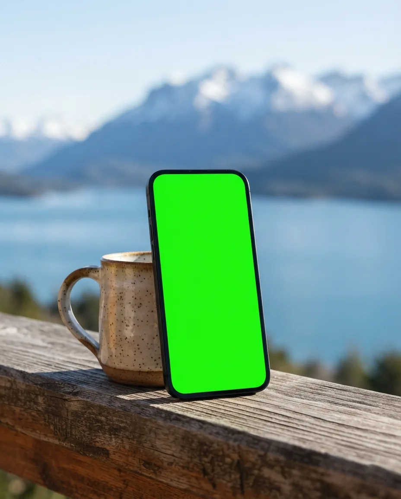
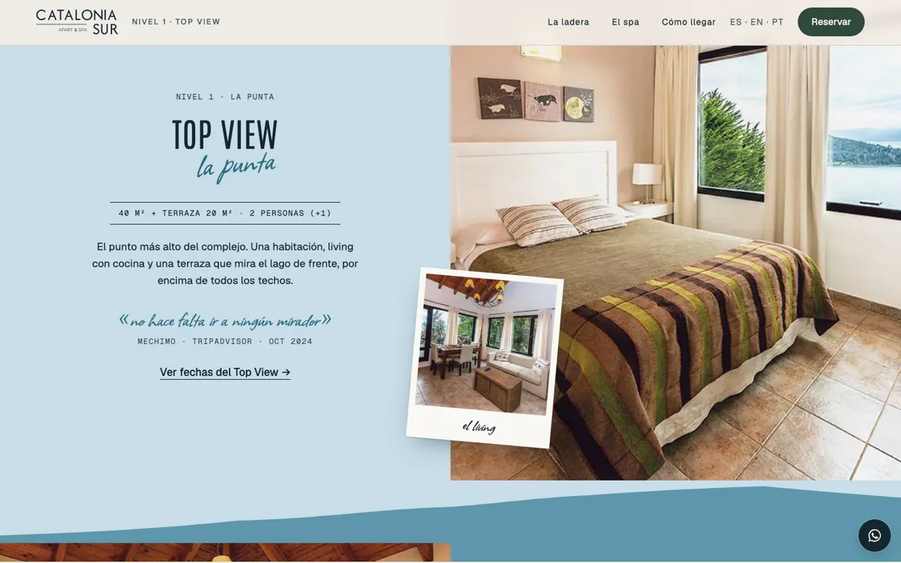
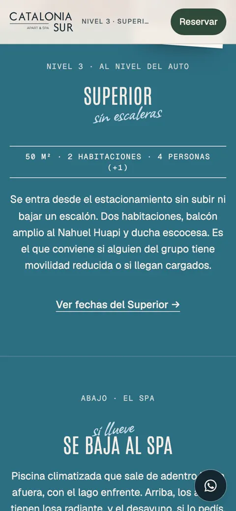
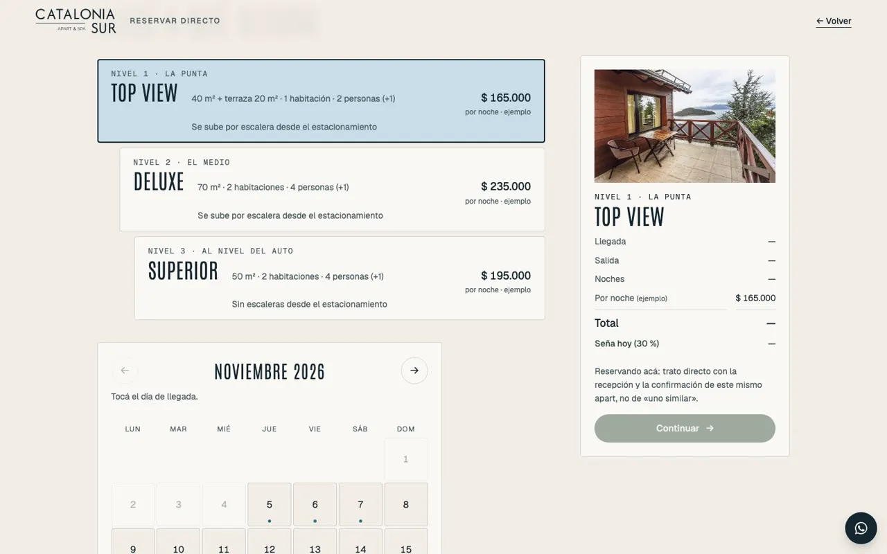
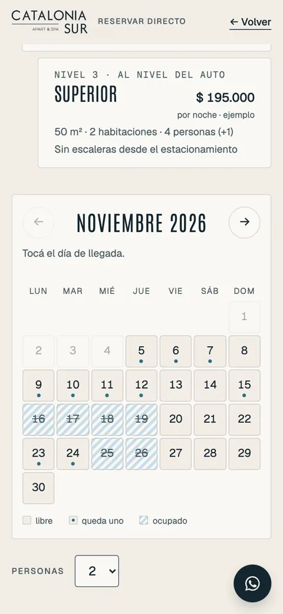
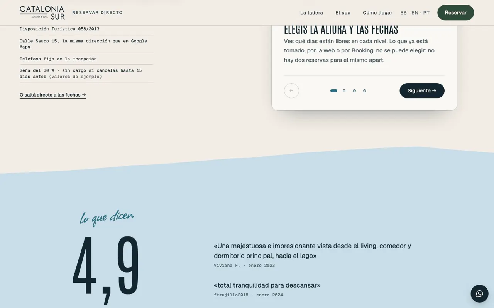

- Concepto · no encargado
- Alojamiento
- 2026
Catalonia Sur.
Reservas directas con seña para un apart hotel en Bariloche, y un panel que muestra lo que deja de pagarle a Booking.
Ver el sitio
Lo que vi
Un apart hotel con spa sobre el Nahuel Huapi que dependía de Booking y de su comisión para llenar las noches. Las reseñas lo querían y se quejaban de lo mismo: escaleras y desnivel. El lugar cerró después; quedó como muestra para otros alojamientos.
La idea
«Se elige por altura.»
El complejo trepa la ladera y cada tipo de apart está a otra altura, con otra vista. El sitio da vuelta la queja: la escalera es lo que elegís. Reservar es elegir altura, después fechas en un calendario que no deja cruzar una noche tomada, y pagar la seña. Del otro lado, un panel suma la comisión que no se le pagó a Booking.
Por dentro





Cómo usé IA
| Herramienta | Para qué | Lo que corregí a mano |
|---|---|---|
| Sin imagen generada | Todas las fotos son del lugar. La IA no tocó ninguna. | El corte del edificio lo redibujé como es el real, con sus tres niveles. |
| Claude Code | Las tres páginas (sitio, reserva y panel) con datos de ejemplo compartidos: una reserva hecha aparece en el panel. | Probé el recorrido de punta a punta: no hay doble reserva. |
| Investigación | Reseñas de TripAdvisor y Kayak para sacar el vocabulario del huésped. | Booking bloqueó la descarga: no hay ningún dato de Booking inventado. |
En números
- Páginas conectadas
- 3
- Fotos generadas
- 0
- Comisión que mide el panel
- 15–25 %
- TripAdvisor, 493 reseñas
- 4,9
Tarifas, unidades y seña están rotuladas como ejemplo en pantalla. Lo trasplantable a otro alojamiento es la reserva y el panel.